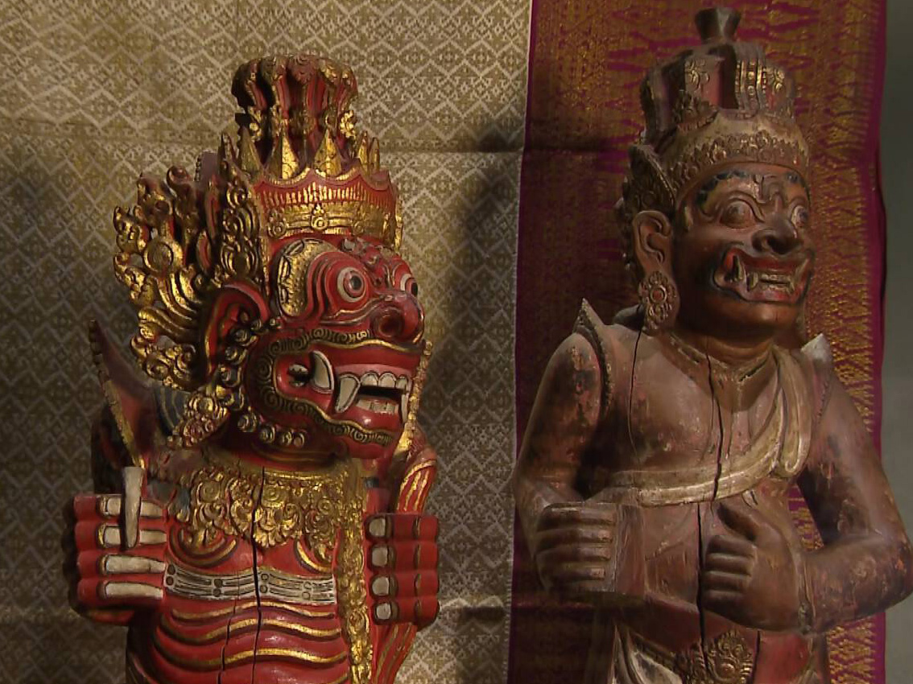
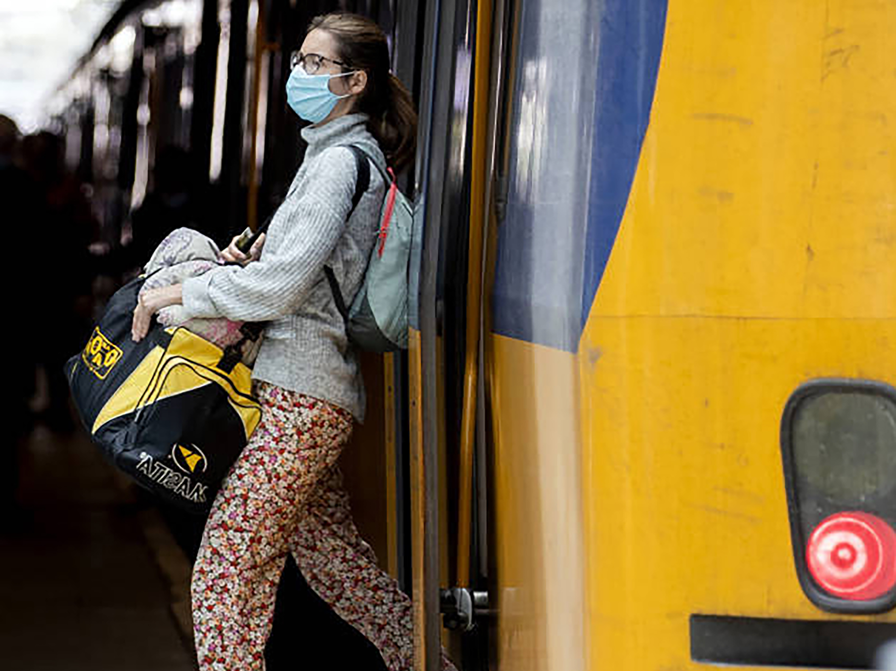

Advies aan minister: koloniale 'roofkunst' onvoorwaardelijk teruggeven
'Meer incidenten in ov door coronaregels, wekelijks 144 keer rond mondkapjes'
-
Running mates Pence en Harris kiezen in kalm debat voor 'veilige weg'
-
In een debat met veel onderwerpen en weinig verrassingen hebben vicepresident Mike Pence en running mate Kamala Harris van de Democratische presidentskandidaat Joe Biden in Salt Lake City een stuk duidelijker uiteengezet waar zij voor stonden dan hun presidentskandidaten, een week eerder.
-
Irritatie bij huisartsengenootschap over brief voor gebruik hydroxychloroquine
-
In een brief, die vooraf is opgesteld door een huisarts uit Limburg, vragen patiënten hun arts hydroxychloroquine toe te dienen als ze besmet raken met het coronavirus. Het heeft geen enkele zin, zegt het huisartsengenootschap.